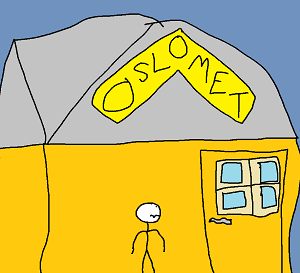

Reflection-essay
Start of first semester
The first year of transition from work life to studying at Oslo-met felt like a bigger jump and different than earlier education. I did not expect it to be that much different than upper-secondary school, but the differences surprised me. The education is much more hands on and related to specific topics than it was in earlier educations and that makes it easier to focus on it since it is something I am interested in. The responsibility of being a student instead of a pupil is also different since now you are yourself responsible for your will to learn. The teacher will no longer call your parents if you do bad on a test or fail an assignment. It is now your responsibility to recognise how you can improve. Another thing that affected the start of this semester was the fact that COVID-19 regulations were still not yet fully lifted. Which meant that most of the seminars were done digitally. This was a bitter sweet experience since I did enjoy learning and studying from the comfort of my own home, but at the same time I also missed being in a professional learning environment where the focus was studying and improving along with other people with the same mindset.
Learning to code
I did have some prior experience with coding within python, but not enough to call myself good at it. This semester the main focus within coding was on JAVA and HTML. Two languages that I had no prior experience with.
- HTML

- JAVA